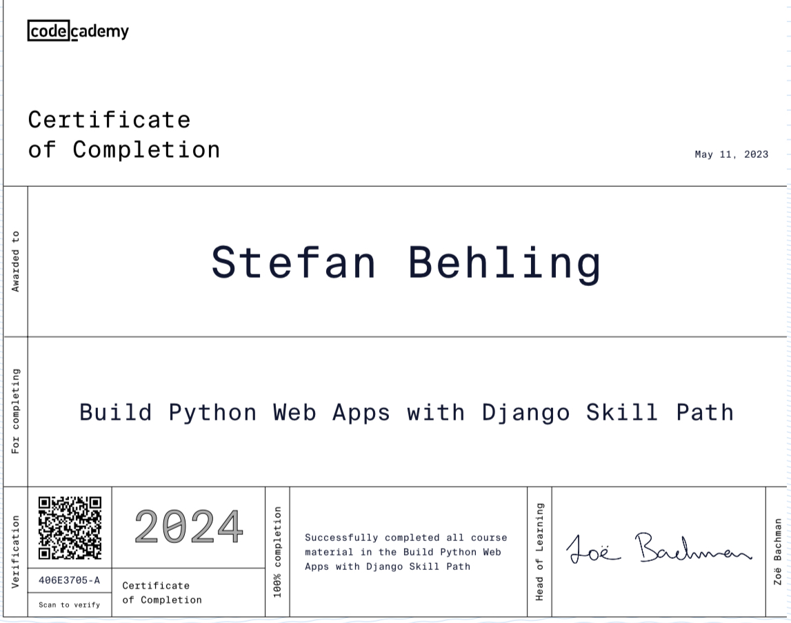

Zertifizierungen


Tech-Enthusiast & Entwickler
Mein Name ist Stefan Behling und ich liebe die Möglichkeiten, die Python für alle Projekte bereitstellt.
Eine Datenbank zur statistischen Auswertung von fehlerhaften Teilen innerhalb der Produktion Mehr...
Datenbank gestütztes Dashboard mit integrierter Kapazitätsplanung im Kanban Style und Anbindung an das ERP System Mehr...
Frühwarnsystem für Prototypen, die in der Produktion zu Verzögerungen führen können Mehr...
Email: kontakt@stefanbehling.tech